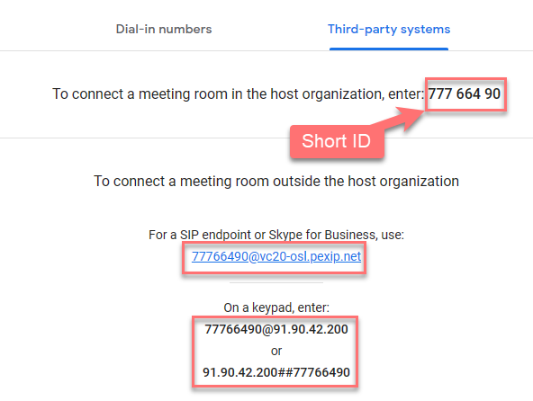

Testing
To test, navigate to https://meet.google.com. You can start a new meeting, by clicking “Start an meeting”.
Log in with your lab user credentials (see section #11). You will need to do this within the RDP session as otherwise, you will be prompted for a 2FA.

If you are already logged in, you will see a "New Meeting" button, then; you can start a meeting by clicking “Start an instant meeting”.

Once you are in the meeting, click the “More phone number” link in the “Your meeting is ready” box, then in the “Third-party system” tab, you should see the joining options for your group.
If you accidentily close this dialog, you can get to the same infomation by clicking the "i" button in the controll bar.


Make sure you test both trusted and untrusted routes (so using both a registered endpoint and the WebApp or a SIP/MS-SIP client).
In the real world, you probably would not want users to use the Infinity WebApp as they might as well navigate directly to Google Meet. Disabling any incoming call match for the “Match Infinity Connect (WebRTC / RTMP)” protocol would stop a WebApp user from gatewaying to Google Meet, but it would also stop users of the desktop Connect clients, as this is a Chromium app so still uses WebRTC.
Google calendar invites will use the long meeting ID. Whilst One Touch Join can currently parse Google HTML pages using the short ID, it will likely use just the long ID going forward. These will be embedded in the calendar invite headers, providing a more scalable and robust joining option.